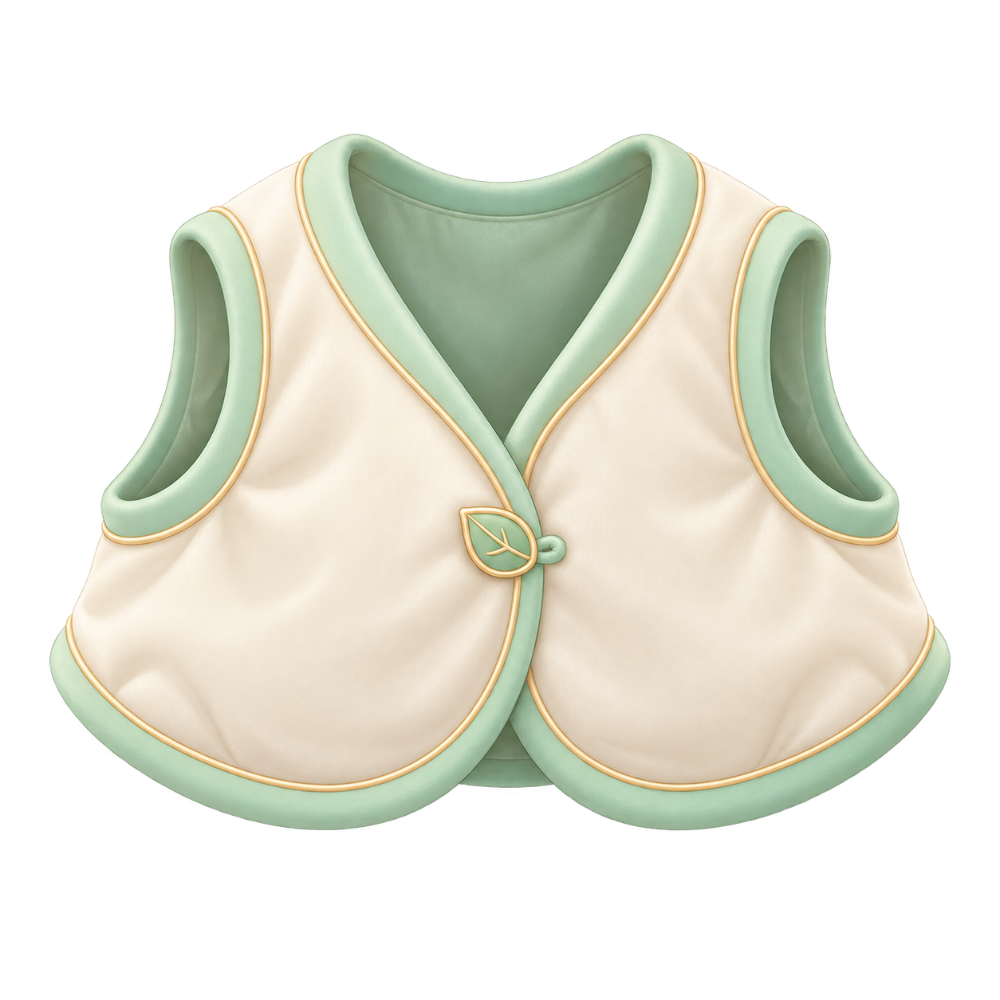

<!doctype html><html lang="ja"><meta charset="utf-8"><meta name="viewport" content="width=device-width,initial-scale=1"><title>こもれびベスト・着用前提の検証</title>
<style>*{box-sizing:border-box}body{margin:0;background:#f5f3e8;color:#44513e;font:15px/1.65 system-ui}main{max-width:1050px;margin:auto;padding:18px}h1{font-size:22px;margin:0 0 10px}h2{font-size:17px}p{margin:8px 0}.note{background:#fffdf5;border:1px solid #d4d9c3;border-radius:12px;padding:12px}.controls{display:flex;gap:8px;flex-wrap:wrap;margin:14px 0}button{font:inherit;padding:8px 13px;min-height:44px;border-radius:12px;border:1px solid #8d9a7b;background:#fdfcf7;color:inherit;cursor:pointer}button[aria-pressed=true]{background:#e0e9cc;border-color:#677951}button:focus-visible,input:focus-visible{outline:3px solid #6087a5;outline-offset:2px}button:disabled{opacity:.55;cursor:wait}.grid{display:grid;grid-template-columns:minmax(0,2fr) minmax(240px,1fr);gap:18px}.canvasWrap{min-width:0}canvas{display:block;width:100%;height:auto;border:1px solid #bdc8aa;border-radius:14px}img{max-width:100%;height:auto}.side{min-width:0}.side img{display:block;max-height:250px;object-fit:contain;background:#fff;border-radius:12px}.meta{white-space:pre-wrap;overflow-wrap:anywhere;font:12px/1.6 ui-monospace,monospace}label{display:block;margin:9px 0}input{width:20px;height:20px;vertical-align:middle}.status{min-height:1.8em}details{margin-top:14px}@media(max-width:650px){main{padding:12px}.grid{grid-template-columns:1fr}.side img{max-height:180px}h1{font-size:19px}}</style>
<main><h1>こもれびベスト・着用前提の検証</h1><p class="note">保存済みミルネ2段階とベストの原画を使った<strong>正面の2D検証</strong>です。基準点・内布の抜き・前足や足の重なりは検証候補です。着用合格、動作、実3D、全角度、装備・解放・セーブの成功には数えません。</p>
<div class="controls" role="group" aria-label="成長段階"><button data-stage="baby">ベビー・座った姿</button><button data-stage="adult">おとな・立った姿</button></div>
<div class="controls" role="group" aria-label="比較背景"><button data-matte="#ffffff">白</button><button data-matte="#eaf2da">淡い緑</button><button data-matte="#1f3d2f">濃い緑</button></div>
<div class="grid"><section class="canvasWrap"><canvas id="fit" width="1254" height="1254" aria-label="2D着用前提の実描画"></canvas><p id="stageLabel"></p></section><aside class="side"><h2>変更しないベスト原画</h2><label><input id="guides" type="checkbox" checked>基準点と遮蔽候補を表示</label><label><input id="occlusion" type="checkbox" checked>首・腕穴と前足の重なり候補</label><label><input id="bodyOnly" type="checkbox">身体原画だけと比較</label><p>基準点は耳や全PNGの大きさから決めず、元画像の肩付近の候補2点を使います。胴の青枠・遮蔽の紫枠も手動注記で、3Dの骨や身体測定ではありません。</p><button id="capture">画面をPNGで保存</button><p id="captureStatus" role="status" class="status"></p><p class="meta" id="receipt"></p></aside></div>
<details><summary>元画像・座標と未完了の状態</summary><pre id="proof" class="meta"></pre></details></main>
<script src="./fit-preview.js"></script><script>
'use strict';var LOCAL_CAPTURE=false,config={};
var state={stage:'baby',matte:'#eaf2da',guides:true,occlusion:true,bodyOnly:false},data=null,images={},revision=0,lastProof=null,capturing=false;
var canvas=document.getElementById('fit'),ctx=canvas.getContext('2d'),capture=document.getElementById('capture');
function text(id,value){document.getElementById(id).textContent=value;}
function image(src){return new Promise(function(resolve,reject){var im=new Image();im.onload=function(){resolve(im);};im.onerror=function(){reject(Error('画像を読み込めませんでした。'));};im.src=src;});}
function paint(){if(!data)return;revision++;var result=PetFitPrerequisite.draw(data,state.stage,{body:images[state.stage],vest:images.vest},ctx,state);lastProof={revision:revision,stage:state.stage,matte:state.matte,guides:state.guides,occlusion:state.occlusion,bodyOnly:state.bodyOnly,bodySHA:data.bodies[state.stage].sha256,assetSHA:data.asset.sha256,landmarkRevision:data.landmarkRevision,transform:result.transform,representation:'2d_front_reference',completedFit:false,motion:false,geometry3d:false,full360:false,unlockSave:false};text('stageLabel',state.stage==='baby'?'ミルネ・ベビー／座位の原画':'ミルネ・おとな／立位の原画');text('proof',JSON.stringify(lastProof,null,2));document.querySelectorAll('[data-stage]').forEach(function(b){b.setAttribute('aria-pressed',String(b.dataset.stage===state.stage));});}
document.querySelectorAll('[data-stage]').forEach(function(b){b.addEventListener('click',function(){if(capturing)return;state.stage=b.dataset.stage;paint();});});document.querySelectorAll('[data-matte]').forEach(function(b){b.addEventListener('click',function(){if(capturing)return;state.matte=b.dataset.matte;paint();});});['guides','occlusion','bodyOnly'].forEach(function(id){document.getElementById(id).addEventListener('change',function(e){if(capturing){e.target.checked=state[id];return;}state[id]=e.target.checked;paint();});});
capture.addEventListener('click',async function(){if(capturing||!data||!lastProof)return;capturing=true;capture.disabled=true;var snapshot=JSON.parse(JSON.stringify(lastProof));try{await new Promise(requestAnimationFrame);var blob=await new Promise(function(resolve){canvas.toBlob(resolve,'image/png');});if(!blob)throw Error('PNGの作成を確認できませんでした。');if(LOCAL_CAPTURE){var response=await fetch('/__qa__/capture',{method:'POST',headers:{'Content-Type':'image/png','X-QA-Nonce':config.nonce,'X-QA-Metadata':encodeURIComponent(JSON.stringify(snapshot))},body:blob});if(!response.ok)throw Error('保存を確認できませんでした。');var receipt=await response.json();text('receipt',JSON.stringify(receipt,null,2));text('captureStatus','実描画PNGを保存しました。原画や新デザインには数えません。');}else{var url=URL.createObjectURL(blob),a=document.createElement('a');a.href=url;a.download='milne-'+snapshot.stage+'-2d-fit-prerequisite.png';a.click();setTimeout(function(){URL.revokeObjectURL(url);},1000);text('captureStatus','PNGの保存を開始しました。保存先で実ファイルを確認してください。');}}catch(e){text('captureStatus',e.message==='保存を確認できませんでした。'?e.message:'PNGの保存を確認できませんでした。');}finally{capturing=false;capture.disabled=false;}});
fetch('./fit-data.json').then(function(r){if(!r.ok)throw Error('data');return r.json();}).then(async function(d){PetFitPrerequisite.validate(d);var a=await Promise.all([image(d.bodies.baby.src),image(d.bodies.adult.src),image(d.asset.src)]);images={baby:a[0],adult:a[1],vest:a[2]};data=d;paint();}).catch(function(){text('stageLabel','元画像と検証データを読み込めませんでした。再読込して確認してください。');capture.disabled=true;});
</script></html>